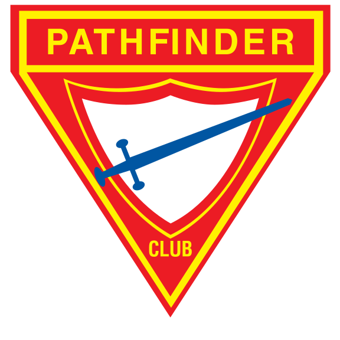

Accueil
Planning
Photos
À Propos
Fermer

Les Explos de Nantes
Open main menu
Prochaine reunion
Le
Voir plus de détails
Prochains camps
Camps de la UFBJA
Liste des Camps d'été
AMEB
Après-Midi énigme biblique
Plus d'infos